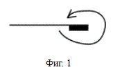
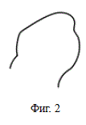
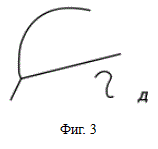

Беседа 3032 от 3877 · Беинса Дуно
Нормалният човек
Отче наш.
Зададена тема имате ли? – /Нямаме./
Какви бяха положенията на миналата лекция?
Бялото и черното, това са резултати. Боядисваш бялата риза. Бялата риза може да я боядисаш черна. Черният цвят е основа на бояджилъка. Той е основа, оттам започва изкуството бояджийство, художество. Художниците без черния цвят не могат. Като се разлага черният цвят, добиват се други цветове. Черната земя плод дава, белият цвят, той е много беден. Бялата пръст, ако сееш в нея жито, не става. Пък и пясъкът има бял цвят. Бялото е безплодно, черното е плодовито. Казвате, че някой човек е добър, а друг – лош. Как различавате? По какво се отличава лошият човек и добрият човек? Кои са отличителните черти на лошия и кои на добрия? На лошия човек милосърдието не е развито, съвестта не е развита. Развито е разрушението, състезанието, личните чувства, яденето. Както вземете в един вълк, развит е гладът. Намери някоя овца, разкъсва я, много малко милосърдие има. Най-немилосърдното същество е змията.


Запример, зъбите още не са музикални. Човек, като се разгневи, хапе. Децата обичат да се хапят. Като хване за ръката, ухапва. Ноктите не са облагородени. Някой път човек по инстинкт дращи. Казвате: „Дали човек е бил животно?“ Някой път дращи. Всичките месоядни животни дращят. Децата, пък и възрастните, а особено жените обичат да дращят. Един инстинкт е драскането. Понякой път много пакости може да направи. Има инстинкти, които са останали в човека. Човек, като дойде в особени специфични състояния, показва се миналият характер на човека, на своите деди и прадеди. Казва: „Има характер на котка, има характер на тигър, има характер на мечка, на вълк.“
Човек още не е станал светия. Да стане човек светия, трябва да знае да се освободи от всички свои животински навици. Значи под „животно“ разбирам живот на произвол. Възпитанието на човека не е нищо друго, освен да се освободи от първобитните произволи на битието. Всичките страдания произтичат от този хаос на битието. Това е безначалие. Едно животно ни пет пари не дава за страданията на другите. То чувствува своите страдания. То се гневи на другите, когато му причиняват страдания. Когато то причинява страдания на другите, мисли, че е в реда на нещата. Казва: „Така трябва да бъде.“ Когато причиняват страдания на него, казва: „Това не е право“, кой смее на него да причини страдание? Запример, във всинца ви човекът най-първо се проявява трояко.
Аз веднъж наблюдавах две деца, двегодишни, в две колички. Гледаш ги, ангелчета, доста хубави деца. На едното дали ябълка, то я държи. Другото хвана детето за косата, раздруса го, пък му взе ябълката. Онова тури ръцете на очите и започна да плаче. Плака, плака, пък по едно време проточи то ръката си, хвана другото дете за косата, разтърси го, взе ябълката. Другото започна да плаче. Минаха се няколко минути. Мислят, че са разрешили въпроса. Къде седи сега въпросът? – Ябълката. Едното казва: „Кой ти даде право да ядеш ябълката?“ Аз разсъждавам. Като ти дадоха ябълката, защо не я разделиш, защо не мислиш като човек? Този морален закон да внесеш. Другото дете държи ябълката. Разговарят се след това. Аз тълкувам. Едното казва: „Ами ти, като взе ябълката, защо не раздели?“ Хвана и го раздруса. И двете плачат. Не зная защо плачат. Ябълката е причината, нищо повече. Сега и възрастните учат същия закон. Всичкото правосъдие в света седи в това да разделят имането – тази ябълка. Всичката съдба става за една ябълка. Основата на съдопроизводството се дължи на тази ябълка. Спор има за една ябълка. Един взел повече. Трябва да се раздели, на всекиму трябва да се даде правото.
Казвам: Във всинца ви, в дадения случай, трябва да се създаде съзнанието да разсъждавате право. Да кажем, седнете някъде, един гладен човек седнал при вас, вие носите хляба. Може да направите наблюдение. Вие седнете да ядете, той няма хляб. Вие ядете, той ви гледа и в него се заражда едно недоволство. Ако вие се наядете, турите хляба в торбата и си заминете, той ще каже: „Много жесток човек“ Правото е да отрежеш едно парче за себе си и едно парче за него. Колкото отрежеш за себе си, толкова и за него. Като отрежеш второ парче за себе си, и за него ще отрежеш второ парче. После трето за себе си и трето за него. Вие оставяте впечатление в ума на този човек, че сте справедлив човек, досещате се. То е правото положение в света. Законът на природата: Каквото даде, дава го за един ден, ти не трябва да складираш за другия ден. За утрешния ден няма какво да мислиш. В природата този закон е изключен. В човешкия закон не е изключен, трябва да мислиш за бъдеще. В природата това е изключено. Всеки ден имаш хляб преизобилно. Всеки ден имаш двойна порция дадена. Ти не можеш да го изядеш сам. Тя дава повече, че като имаш един приятел, и на него да дадеш половината от дажбата, която имаш. Да допуснем, че имаш един кабриолет с един кон. Качиш се на кабриолета и има място още за един човек. Кого ще туриш сега? Вие как бихте разрешили този въпрос? Кого ще туриш, умрелия или живия? Представете си, че искате да носите един умрял човек на каруцата. Ще се качите, колата отпред, вие отзад или ще слезеш от каруцата и ще оставиш умрелия сам. Кое е правото в дадения случай? Но вие умрелия няма да качите на каруцата, да го разтърсва. Умрелите не обичат да ги разтърсват, умрелите не обичат да ги развождат с каруци. Умрелият изобщо там, дето е оставен, дето му изтекла кръвта, там ще го заровиш. Там му е животът. Той не обича да го вземеш и да го заровиш другаде. Кои са умрелите хора? Една умряла идея защо ще я носиш в главата си? Едно умряло чувство защо ще го носиш в тялото си? Една умряла мисъл остави я, зарови я някъде. Да направим едно сравнение. Една умряла идея е един развален орех. Какво ще носиш десетина развалени орехи? Черупките са здрави, но орехите са развалени, що ще ги носиш?

Някой път някой казва: „Аз не съм милосърд.“ Той го чувствува някъде в своя слънчев възел. Понеже, когато милосърдието в човека е повечето развито, той възприема повече слънчева енергия, мека и приятна. Пък този човек, в когото милосърдието е развито, има приятно чувство в себе си, има доволство, радва се на нещо, което той не го знае. Когато туй чувство в него не (е) развито, той не го знае къде е, той приема по-малко от тази слънчева енергия, той чувствува студено сърце, недоволен от живота. Всякога, когато има един недоимък в милосърдието, или пък някой път чувствуваш, че милосърдието действува по-осезателно, конкретно можеш да го представиш физиономически, когато милосърдието е развито, мускулите на лицето имат особен строеж. Когато милосърдието не е развито, мускулите не са хармонично турени на лицето.
Философията седи в това, да не се спирате върху частностите, защото всичките хора носят последствията на миналите векове, които са живяли преди тях. Някой път човек може да носи недостатъците на хората, които са живяли преди него, както един техник, ако се качи на една стара машина, той вижда всичките дефекти, мъчи се да я изкара насам, натам, но не върви. Спира се, ще слезе от машината. Гледал съм някои автомобилисти, спре каруцата, излиза, извади някой инструмент, разни части, дето подигат колелата, върти насам, натам, отпред, отзад, върти, върти, докато тръгне. Върви малко, после пак спре. В колата има много дефекти. Вървиш и ти в живота някъде, дойдеш, не можеш да разрешиш въпроса. Не ти стига умът да разрешиш въпроса. Казва: „Какво да правя, едва за себе си имам.“ Дай половината хляб. Ако той не даде половината хляб, той пак ще заплати заради него. Защото онзи, който дошъл, той има правото на половината. Макар да е половина хляб, и от него ще дадеш половината на другите. Ти на деня можеш да изядеш един хляб. То е твое право. И за двамата души можеш да го изядеш. Щом дойде друг, ти нямаш право да го изядеш, имаш право само да дадеш за едного. Половин хляб ако имаш, сам имаш право да го изядеш, но ако дойде друг, ти нямаш право да го изядеш, ще дадеш половината, четвърт ще изядеш. Ако не дадеш, за в бъдеще така и с тебе ще постъпят, по същия начин. Както ти постъпваш, така ще постъпят и с тебе. Тогава да допуснем, само изяснение, понеже нещата не са проверени. Сега ви казвам нещо, което не сте проверили, но може да ги проверите. Допуснете, че един вълк, като изял хиляда овци, той станал овца. Защото след като ял овци, замязал на овците, ял такъв материал и той станал като овца. Като станал овца, отказал се да яде овце. Вълците започнали да го ядат. Колко пъти ще го ядат? Колкото пъти той изял овце. Хиляда овци изял, хиляда пъти ще го изядат. По същия начин ще има опитност. Ако направиш една погрешка, ще имаш опитността на една погрешка, ако направиш десет погрешки, ще имаш опитността на десет погрешки. Ако направиш едно добро, ще имаш цената на десет добрини. Така че всичко се възвръща, и добро, и зло, каквото направиш, ще се възвърне, за да имаш цената. Човек трябва да опита цената на злото, трябва да опита и цената на доброто.
Та в сегашната форма вие опитвате в мека форма някои неща. Опитвате в мека форма сиромашията, опитвате в мека форма болестите, опитвате недоволството, някои мъчения, тъмни мисли или несрети в живота. Те са неща, които са резултат на вашето минало. Като погледнете, откъде започват тези мъчнотии? Някъде някоя кокошка станали сте причина да я заколят за вас. Няма нито един от вас, за когото една кокошка да не е заклана. За някои са заклани десет, двайсет кокошки за вашето здраве.
Именно Божественият закон е да разберем онова начало на Божествената хармония. Представете си, че вие сте в едно място, дето няма никакви плодове, никакви корени, хляб нямате, само месо има. Те са математически предположения. Какво ще правите? Представи си, че ти си много честен човек, не обичаш чуждото, дойде един човек, който обрал някого, пък турил парите в джобовете си, ти какво ще правиш? Тури в двата си джоба английски лири стерлинги. Вие какво бихте направили сега? Аз разсъждавам много тънко. Когато дойде един човек, че ме хвали за това, което не съм. „Ти, казва, си един отличен художник.“ – Аз не съм никакъв художник, той маже сега. Тури златните пари в джоба. Не, не, това са чужди пари, аз не съм такъв художник. Казва: „Пък като свириш, мед капе. Пък гласът ти като на един ангел.“ Той те маже, ти трябва ли да приемеш тези работи? Ще кажеш: „Имам за цел да пея като ангел, но не съм като тях, пея още като жабите.“ Защото аз ги слушам, жабите са много музикални, много правилно вземат тоновете, тъй оперно пеят. Като идеш, жабата прави движение на една страна, на друга, пее оперно. Трябва да идете да видите колко оперно пеят. Пее на жабешко съзнание. Една жаба тъй оперно казва да друга: „Съседке, времето хубаво, какво ще стане?“ /Учителят пее./ Другата отговаря: „Право ли казваш, право ли казваш?“ /Учителят пее./ Те се разправят. Казва: „Съседке, на нашата близка съседка една муха кацнала на носа, тя я хвана и я глътна.“ – „Сладка ли е мухата?“ Започват тъй да пеят. Те започват дует. Започват жабите три–четири месеца, после напущат блатото и заспиват. Казват: „Другата година пак ще започнем да пеем.“ Принципално е вярно това. Съзнанието на жабите иде вече от един по-висш свят, дето действува. Аз представям така жабите. Вие имате едно перо, пишете на вашия приятел: „Любезни приятелю“. Де е съзнанието, в перото ли? То пише: „Любезни приятелю.“ Аз сега разсъждавам за онзи жабешки дух, който седи отгоре, чрез жабите прави нещо и прави известни движения. Като колективно същество са, в които духът работи. Те нямат туй будно съзнание. Съзнанието на жабите е само будно, когато приближи до нея една муха. Ако туриш пръста си, будно е съзнанието, изплашва се. Но ако ти пристъпиш полека към нея, туй движение не можеш да забележиш, движението на тялото, но ако покажеш пръста, схваща и се плаши.
Ние в света се плашим като мухите от пръста, а не се плашим от онези, на когото е пръстът. Дойде една малка мъчнотия, която е пръстът. По-голямата мъчнотия не виждаш, виждаш по-малката. Право, защото зад малката мъчнотия седи голямата. Ако човек може да избягва малките мъчнотии, може да избягва и големите.
Имате сега една идея. Всеки човек, който е извървял 180 градуса, е нормален човек. Има да вървиш още и тогава ще дойдем до идеята на спиралата.
Сега, гледайте да пеете хубаво. Ти може да пееш един тон, всеки човек, който пее, той трябва да ражда музиката. Ти, за да го изпееш, трябва да му дадеш съответна форма. Тогава на тона „си“ трябва да му дадеш един отличен нос, отлични вежди, после добре оформена уста, на този тон да му дадеш добра прическа, нормално чело, добра корона на главата, добре развито и оформено лице, крака, оформена мускулна система. Един дрезгав тон, той не е справедлив, ти се възмущаваш. Но онзи тон, който е добре оформен, внася справедливост, усещаш една хармония, не те дразни.
Вие правете следния опит. Ти казваш тъй: „Аз обичам истината.“ Сутрин си кажи: „Аз обичам истината.“ Като произнасяш думата, гледайте, гледайте какво впечатление ще направи на вас. Вие като слушате туй произношение, да ви е приятно. Като кажеш, че обичаш истината, да почувствуваш една приятност, не да чувствуваш, че една тенекия ти говори. Докато ти, като кажеш тази дума, не почувствуваш, като че мед ти тече от устата и една вътрешна приятност, ти не си добре произнесъл думата. Или като произнесеш „милосърдие“, ти сам да почувствуваш приятност, че си я произнесъл добре. Да ти е приятно, че си произнесъл думата. Говорете на себе си и хубаво да слушате, да не слушате биене на тенекия.
Само светлият път на Мъдростта води към Истината.
В Истината е скрит животът!
XVIII година.
32 лекция на Младежкия окултен клас,
държана от Учителя на 16 юни 1939 г., петък, 5 ч. с.
София – Изгрев.